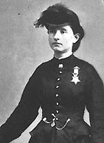

|

|

|
|
|
Civil War doctor and Medal of Honor winner Mary Edwards
Walker was born on November 26, 1832 in Oswego, New York.
She was received an excellent education as a young woman,
eventually earning her medical degree in 1855 from Syracuse
Medical College.
When the Civil War broke out in 1861, Walker immediately
decided to get involved. She traveled to Washington, D.C. to
offer her services as a surgeon to the United States Army's
Medical Department. Walker was offered an appointment, but
only as a nurse, which she refused. She began a
letter-writing campaign, and eventually a compromise was
reached, with Walker agreeing to work as an unpaid volunteer
surgeon in exchange for rations and housing.
Walker served in several locales throughout the war. Her
main base of operations was the "Indiana Hospital," housed
in the U.S. Patent Office in Washington, D.C. Walker also
tended to wounded in the field at Warrenton, Virginia and
Fredericksburg, Maryland, as well as other locations. She
earned the respect of each of the male surgeons she served
under, all of which urged the government to give her a
formal appointment. In early 1864, after much lobbying on
Walker's behalf, she was finally given a noncommissioned
civilian surgeon's contract, paying $80 a month. Walker's
good fortune proved to be short-lived. She was captured by a
few weeks later by a Confederate sentry. She spent the
remainder of the war in prison.
Walker hoped that the government would recognize her
contributions with a permanent position as an army medical
inspector. After some deliberation, President Andrew Johnson
decided not to grant Walker's request. He did support her
nomination for and award of the Medal of Honor. Walker was
the only woman to win the award for service during the Civil
War. Later, Walker turned her attention to political issues,
especially women's suffrage.
Throughout her life, she wore her Medal of Honor as a
badge of the government's gratitude. In 1919, a review board
revoked Walker's Medal. She declined to surrender her medal,
and told the board "you can have it over my dead body." Six
days later she died near Oswego, the place of her birth. In
1977, the Medal was officially restored.
Source: Joan Waugh, ed., Facts on File Encyclopedia of American
History: Civil War and Reconstruction, 1856 to 1869 (New York: Facts on
File, 2003), 386-387.
|